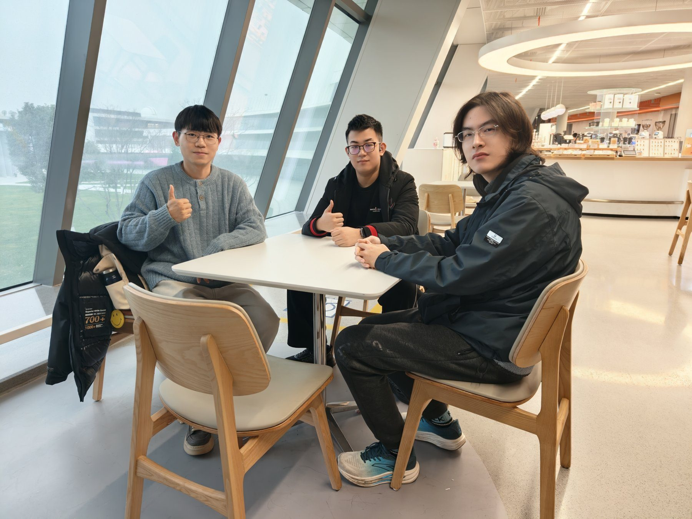

这一次，我们聊了什么
聚焦 AI 融入科研的“最后一公里”：科研要求的严谨性，与模型的概率预测本质之间存在怎样的矛盾？从 RAG、智能体到 AI 科学家，讨论技术瓶颈及其可能带来的科研范式变化。
话题展开
- RAG（检索增强生成）或 Agent（智能体）在多大程度上解决了科研严谨性与概率预测之间的矛盾？
- AI 科学家距离独立提出假设、设计验证方案并完成发现还有多远？瓶颈在算力、专有数据还是推理架构？
- 如何突破工具整合难题，让 AI 成为更可靠的科研助手？
- 如果瓶颈被突破，未来科研范式将发生怎样的重构？
